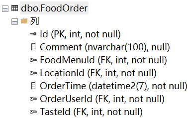
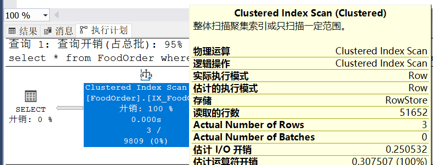

原文连接:https://www.cnblogs.com/sdflysha/p/20191221-why-dynamic-sql.html
为什么需要动态SQL
在使用EF或者写SQL语句时，查询条件往往是这样一种非常常见的逻辑：如果客户填了查询信息，则查询该条件；如果客户没填，则返回所有数据。
我常常看到很多人解决这类问题时使用了错误的静态SQL的解决办法，使得数据库无法利用索引，导致性能急剧下降。
介绍数据
这次我将使用我的某客户的真实数据来演示（已确认不涉及信息安全😎），有一个订单表FoodOrder，结构如下：

我在Id、FoodMenuId、OrderUserId上创建了非聚集索引，在OrderTime上创建了聚集索引。该表有51652条数据。
静态SQL
在这种逻辑中如果想用一条SQL语句搞定所有查询，那么代码可能长这个样子：
set statistics io on
declare @userId int = 506
declare @menuId int = 3176
select * from FoodOrder where
(@userId is null or OrderUserId = @userId) AND
(@menuId is null or FoodMenuId = @menuId)这种写法虽然方便，但基于其SQL过于“复杂”，甚至还使用了IS NULL和OR，导致语句完全无法使用索引，运行SET STATISTICS IO ON后，显示信息如下：
(3 行受影响)
Table 'FoodOrder'. Scan count 1, logical reads 337, physical reads 0, page server reads 0, read-ahead reads 0, page server read-ahead reads 0, lob logical reads 0, lob physical reads 0, lob page server reads 0, lob read-ahead reads 0, lob page server read-ahead reads 0.显示其进行了一次表扫描，并进行了337次逻辑读，输出数据只有3行。
然后看看实际的执行计划：

如图，显示了一个极其简单的执行计划，确实进行了一次表扫描，读取了51652行数据，并且完全没有走索引。
动态SQL
而动态SQL，就是将查询条件中的判断语句，提前在代码中判断完成，而放到数据库（如SQL Server）中执行时就是简单的、可利用索引的SQL语句了，在这个例子中，判断@userId和@menuId是否为null的代码，可能会长这个样子（如果是Dapper）：
var sql = new StringBuilder();
sql.Append("SELECT * FROM FoodOrder WHERE 1=1 ");
if (userId != null)
{
sql.AppendLine("AND OrderUserId = @userId");
}
if (menuId != null)
{
sql.AppendLine("AND FoodMenuId = @menuId");
}
// ...如果是EF，代码可能是这个样子：
IQueryable<FoodOrder> query = db.FoodOrders;
if (userId != null)
{
query = query.Where(x => x.OrderUserId == userId);
}
if (menuId != null)
{
query = query.Where(x => x.FoodMenuId = menuId);
}
// ...这样一来，最终在数据中执行的SQL语句就比较简单了，如果客户确实传了userId和menuId两个参数，SQL就应该长这个样子：
select * from FoodOrder where
OrderUserId = @userId AND
FoodMenuId = @menuId运行的set statistics io on结果如下：
(3 行受影响)
Table 'FoodOrder'. Scan count 2, logical reads 11, physical reads 0, page server reads 0, read-ahead reads 0, page server read-ahead reads 0, lob logical reads 0, lob physical reads 0, lob page server reads 0, lob read-ahead reads 0, lob page server read-ahead reads 0.显然仅进行了11次逻辑读（相比静态SQL的337次），然后执行计划如下：
显示进行了两次Index Seek，显然是走了索引，显示查询开销只占5%，而之前的开销占95%，性能区别高达20倍以上。
总结
据说上次博客园出现性能问题，就是因为EF Core 3.0有这个bug，会生成多余的IS NOT NULL（链接：EF Core 3.0 Preview 9 的2个小坑），这个bug已经确认最新的EF Core 3.1中解决。
就像文中所说的动态SQL，我认为理解数据库、对写出高性能的应用程序至关重要——这显而易见，但其实又很容易忽略。忽略的原因不仅是因为新手，很多老手有时因为“互联网”思维和“设计模式”等原因，也会有意忽略数据库的理解。
现在很多“互联网”应用思维认为，数据库就是一个仓库，它应该只负责其最“擅长”的增删改查功能即可，其它的应该都交由缓存来解决。有句话说得好，就是命名和缓存失效，是编程界最困难的两个问题。缓存有缓存的问题，不好好理解数据库，就必须花大量时间好好理解缓存。设计一个正确的缓存往往又比花大量时间设计数据库要复杂得多。
另外现在流行的“领域驱动设计”（DDD）也主张应用应该先从业务逻辑开始抽象，数据库和性能往往成为他们首先忽略的对象，最后可能也得加个“缓存”来解决，导致原来简单的系统急剧膨胀，复杂不堪。这种过度设计、人云亦云的做法值得深思。
喜欢的朋友 请关注我的微信公众号：【DotNet骚操作】